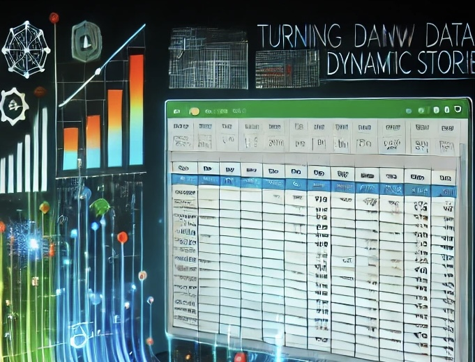
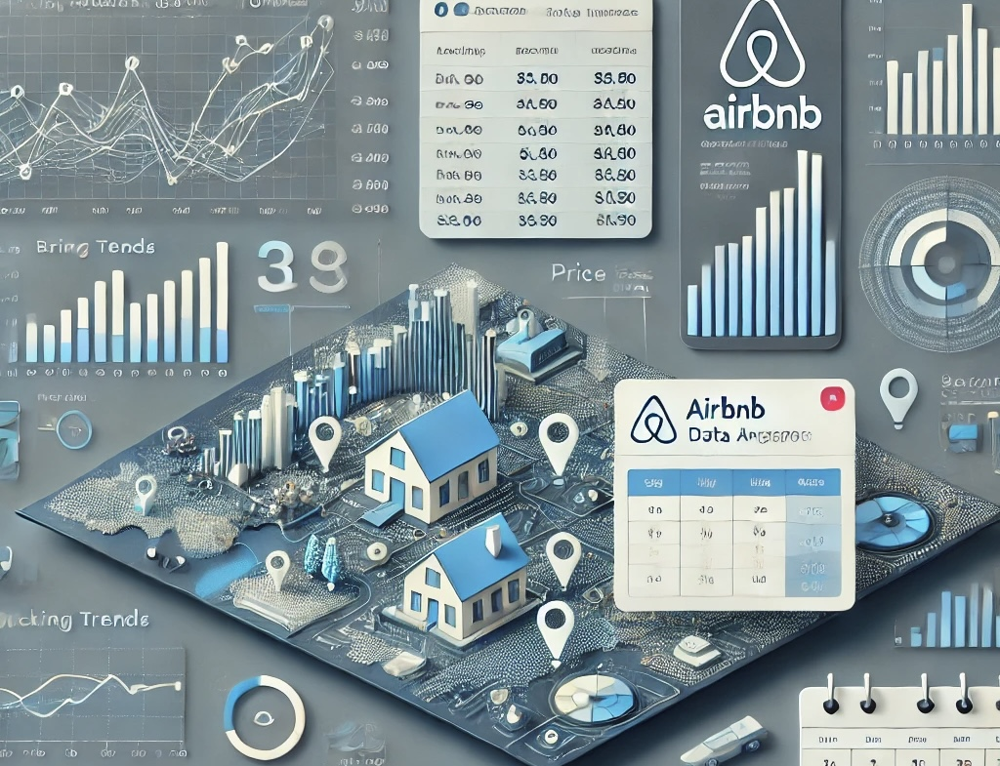
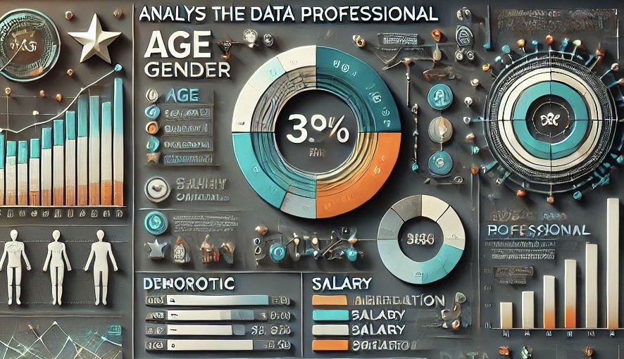

"Behind the numbers" offers a glimpse into my journey and the experience that sparked my passion for data analytics.
Before diving into why i chose data analytics, you will discover how curiousity, problem-solving and finding
passion in data shaped my path. Join me as i share the key moments that inspired me to pursue a path in turning data
into meaning insights.

In Excel Chronicles, bike sales data is brought to life through flawless cleaning, pivot table magic, and vivid dashboards.
By analyzing purchase patterns, i uncovered customer preferences and growth opportunities highlighting my ability in
decision-making and sales strategies.
I transformed disorganized housing data into a unified resource by enhancing accuracy
through strategic querying and cleaning. By addressing issues like missing property
addresses and inconsistent formats, i created a cleaned dataset that revealed trends
enabling informed decisions and driving growth.
In this Xploratory project, I unraveled the hidden truths of COVID deaths and vaccinations.
By analyzing key statistics including Canada's death rates and global vaccination trends
turning it into poweful insights. This shed light on the pandemic's impact and the fight
for public health.

I brought Airbnb data to life, turning booking trends and pricing insights into sleek, interactive dashboards.
By unlocking dimensions like location, seasonality, and property types, I revealed the hidden stories behind
the numbers—fueling smarter, data-driven decisions at a glance

Dive into this vibrant dashboard of the data professional landscape. Uncover demographics, salaries
and trends in job satisfaction and career transitions. Helping to reveal the secrets to what makes
data professionals thrive.
Explore the crypto world with Python and Pandas! This project analyzes market trends, supply data, and price changes across top cryptocurrencies to provide
actionable insights for your investments